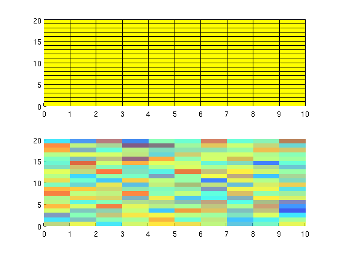
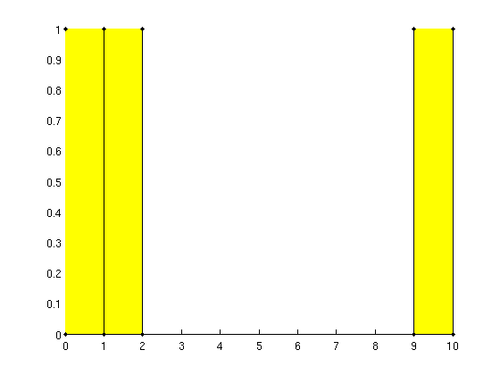

Contents
Create a grid and add helpers
G = computeGeometry(cartGrid([10, 20, 3])); G = gridAddHelpers(G);
Demonstrate plotting
We can now use the helper structures to plot data.
clf; subplot(2,1,1); G.plot.grid(); % Which is equivialent to % plotGrid(G); subplot(2,1,2); data = randn(G.cells.num,1); G.plot.cellData(data, 'FaceAlpha', .5); % Which is equivialent to % plotCellData(G, data, 'FaceAlpha', .5);
Demonstrate helpers
Pick out a subset of cells, and plot them along with their corresponding points.
cells = [1, 2, 10]; [nodes, nodePos] = G.helpers.getCellNodes(cells); clf; G.plot.grid(cells); G.plot.points(G.nodes.coords(nodes, :))